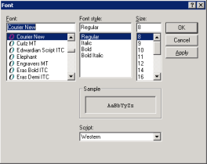

This function enables you to select a font for viewing text files in the viewer window.
This feature is effective only with text-based documents that are transmitted through electronic feeds. Scanned documents cannot be viewed as text.
Note: The Bold, Italic, and Bold Italic font attributes are certified as available only with the Times New Roman font face. They may be available with other font faces.
| 1. | You must be viewing a document as text. If you are viewing the document as an image, enable Display as Text on the View menu. |
The system displays the file as plain text.
| 2. | Select the Set Font menu command from the File menu. |
The system displays a standard Windows Font dialog box and allows you to modify font attributes. For example:

| 3. | Select the desired font attributes and click Apply to view the document in the viewer window with the new font attributes. OR Click OK. The current font settings are saved and used across viewing sessions. |